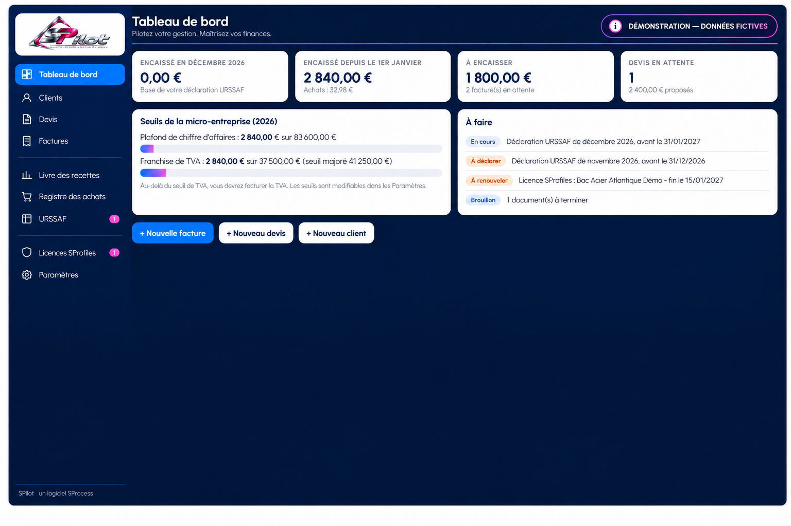

PRODUCTION & PROFILAGE
SProfiles


Commandes, bons de fabrication, bobines, production et indicateurs : votre atelier dans un seul environnement.
DÉCOUVRIR SPROFILES ↗Votre activité mérite des méthodes claires et des outils à sa mesure. J’accompagne les TPE et PME pour simplifier l’organisation, fiabiliser les données et mieux piloter leur performance.
Une approche pragmatique, tournée vers ce qui compte : moins de tâches inutiles, davantage de visibilité et des outils vraiment exploitables.
Comprendre les flux, identifier les points de blocage et faire évoluer l'organisation sans complexifier votre quotidien.
DÉCOUVRIR ↗ 02Des applications pensées pour vos usages : du suivi de production jusqu'au pilotage de la gestion.
EXPLORER ↗ 03Mettre la bonne information au bon endroit, automatiser les suivis et rendre vos décisions plus simples.
NOTRE MÉTHODE ↗Deux projets logiciels Windows en développement, conçus autour de besoins concrets et d'une identité commune.
Commandes, bons de fabrication, bobines, production et indicateurs : votre atelier dans un seul environnement.
DÉCOUVRIR SPROFILES ↗

Clients, devis, factures, encaissements, URSSAF et TVA : la gestion de votre entreprise sous contrôle.
DÉCOUVRIR SPILOT ↗Un échange, une observation de votre activité, un diagnostic puis des solutions adaptées à votre fonctionnement réel.
Échangeons sur vos besoins d'organisation, de gestion ou de logiciel métier.